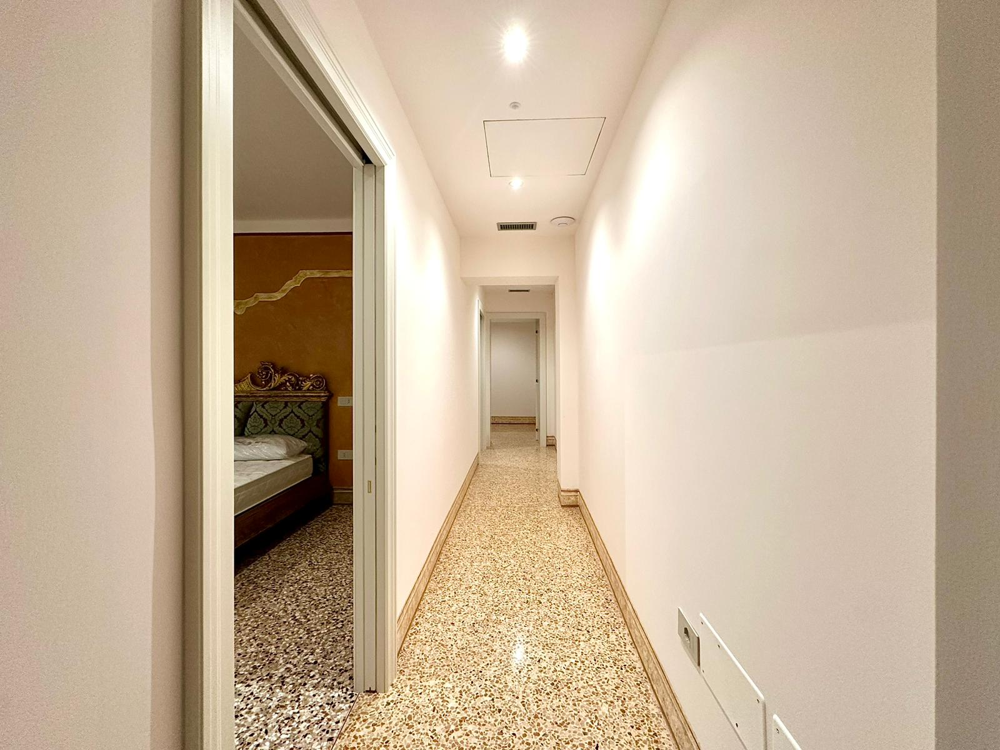
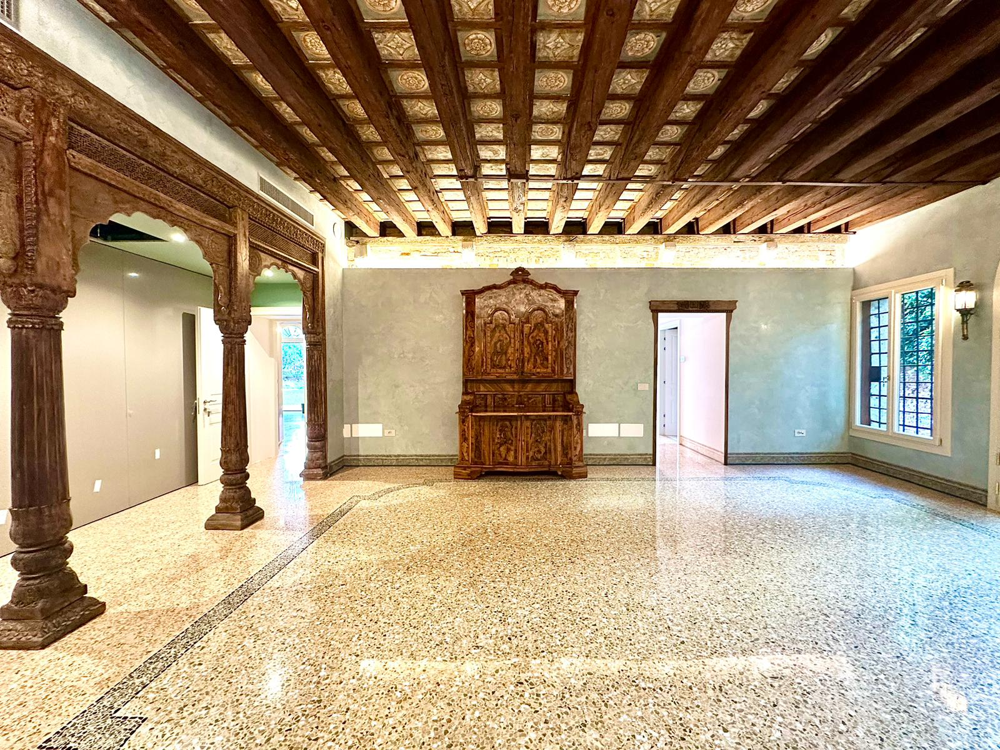
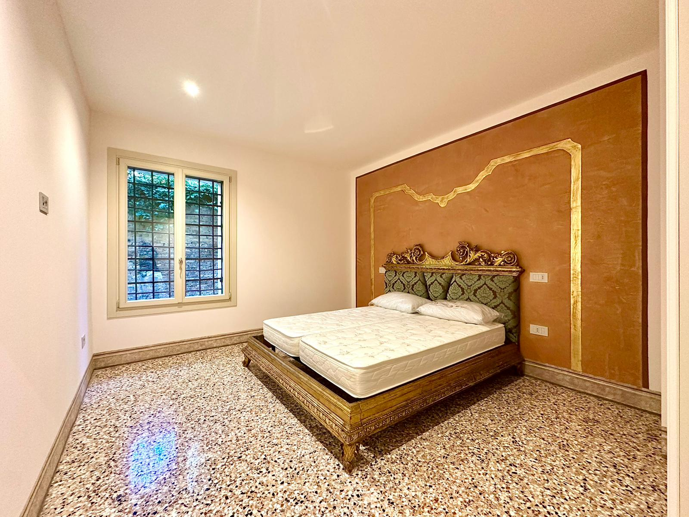
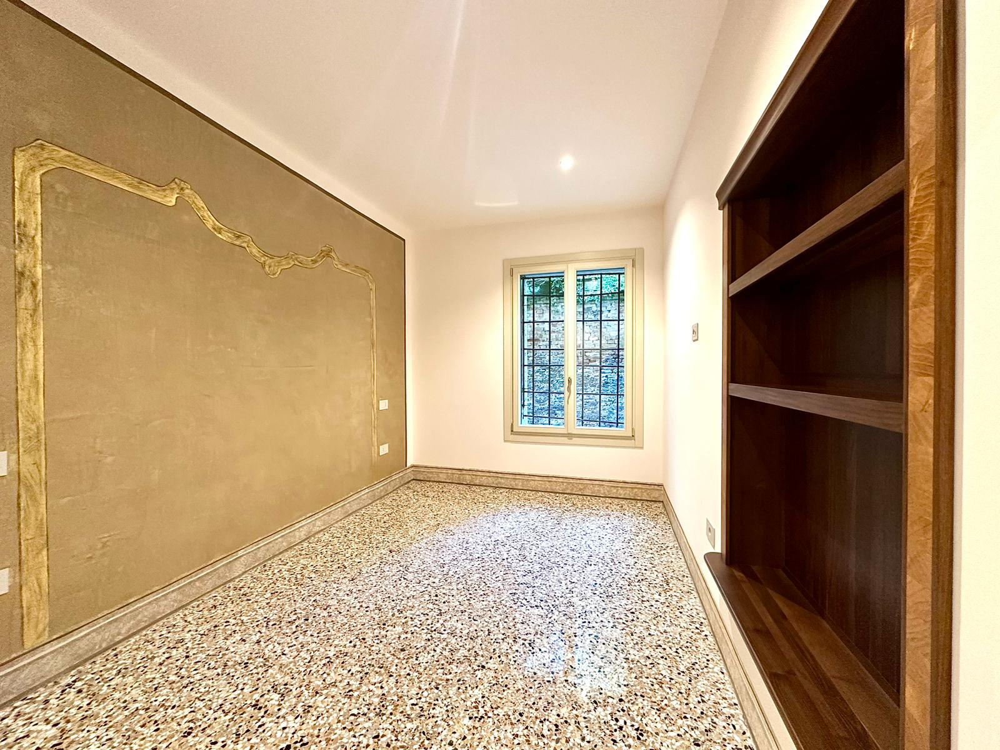
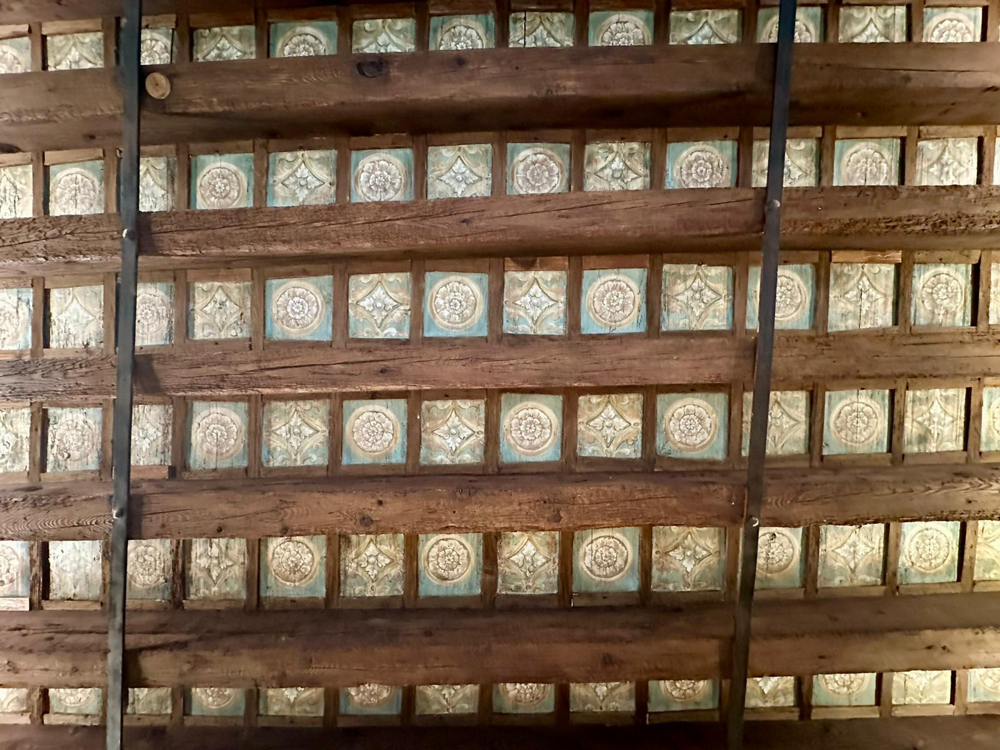
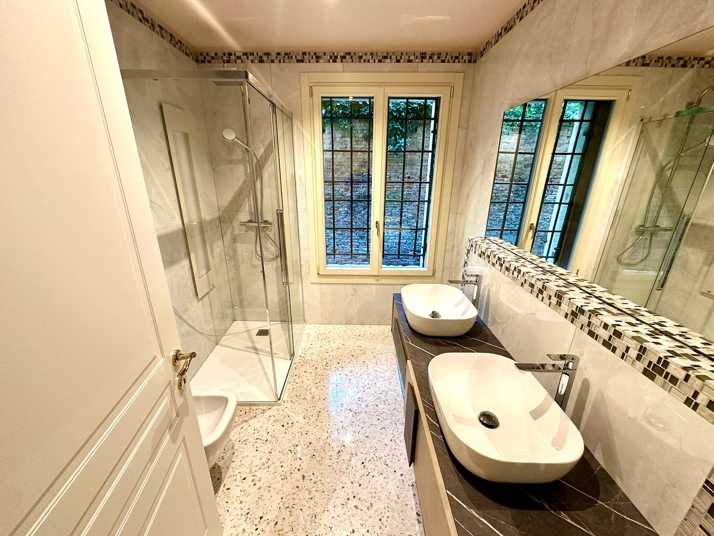

240 m²
Superficie Interna
Piano Terra
Livello
500 m²
Giardino Privato
4 + 4
Camere / Bagni
Nel cuore del sestiere più antico e carismatico di Venezia, San Polo, si nasconde una proprietà che sfida ogni standard immobiliare lagunare. Mentre Venezia è celebre per le sue pietre e i suoi canali, questa magnifica residenza di 240 mq offre il lusso supremo: un immenso giardino privato di 500 mq. Un'oasi segreta che garantisce una riservatezza impareggiabile e una fuga serena a pochi passi dal battito vitale della città.
Il vero segno distintivo della nobiltà veneziana è la Doppia Riva d'Acqua. Questa proprietà vanta due accessi diretti dal canale, permettendo di scendere dalla propria barca direttamente in casa. Dalle finestre, potrete godere del più iconico degli spettacoli: il passaggio silenzioso delle gondole, un quadro vivente che muta con le maree e i riflessi della laguna.
Gli interni sono una celebrazione dell'artigianato veneziano, frutto di una ristrutturazione totale e meticolosa. Ogni ambiente ha un prestigio:
La distribuzione degli spazi è stata studiata per una clientela esigente:
Questa non è semplicemente una casa; è un «Trophy Asset» per chi cerca l'impossibile a Venezia: grandi spazi verdi, accesso diretto dall'acqua e un lusso moderno senza compromessi.





